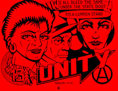

Why Do They Take So Much and Leave Us With So
By Arthur J Miller
 Why is it that a young child must labor in order to survive? Why is it that the lifestyle of a few needs to be maintained by the toil of children?
Why is it that so many work so hard and still suffer from want? Why is it that a few live so well at the expense of so many?
Why is it that we suffer unsafe working conditions: injuries, diseases and death for higher profits from which we don't benefit? The farm workers exposed to toxic pesticides; the office workers with carpal tunnel syndrome and working in sick buildings; the workers on the fishing boats, so many lost at sea; the truck drivers driven to a state of weariness, so many dead upon the highways; the workers on the speedup line trying to keep up while slicing and dicing their own body parts; the miners buried in tombs far beneath the surface of the earth; the maritime workers left in the depths of the world's oceans.
Why are we forced to work long hours, while so much "labor saving" technology is being introduced into industry? What ever happened to the eight hour day? Why have we suffered for so long for so little?
Why have we let the greedy few divide all the productive people in society into groups to be scorned? Who benefits from the division of working people? We workers gain nothing. We only lose, while the few at the top make greater piles of wealth. Racism, sexism, ageism and other artificial divisions are all used to control us who do not control the means of production. Why is it that they are trying to execute Mumia Abu-Jamal?
Why is it that the greedy seek to conquer all indigenous people by one means or another? Why is Leonard Peltier still in prison? Rob their land. Try to destroy their ways. Genocide be thy name!
Why are women in our society expected to do more and receive less? Why is their work as mothers, houseworkers, wage slaves and wives somehow all viewed as being less valuable than the labor of man? Less pay, fewer benefits, less control, less respect, but more work; why is that?
Why is it that people on one side of a line learn to hate the people on the other side of that line? Did they just wake up one morning with hate burning in their bellies? Or did the orders come down from far above because there is much profit in conquest and battle?
Why is it that this society kills people to teach others not to kill? Capital punishment is all about who has the capital and who does not.
Why is it that our society builds weapons of annihilation, while claiming they are for self-defense? What kind of self-defense is it that also kills those that it seeks to defend?
Why is it that so many homeless wander the streets while so much is spent on the mansions of a few?
Why is it that industry, is run for the profit of a few in such a way that the results have little value for the many? Why do they treat even our environment like dice on a crap table? When their gamble with the earth does not pay off, are not even the bosses affected? But they are so much under the influence of their God greed, that to question the costs and risks of accumulating wealth would be an act of blasphemy.
Why do they have so much power to control our society? What allows them to accumulate so much wealth, while so many go without?
The answer is that they are organized to protect their own self-interest. They control governments on the layaway plan. They control us with only their ownership papers which authorizes them to work us to produce profit; then to sell back to us that which we produced; charge us rent to live in homes that we built; and to do these things at the greatest amount of profit for them, at the expense of all the rest of us. No matter how much we work, they own what we produce. Without their approval we cannot buy our food and we cannot have shelter. Those little pieces of paper even tell us on which parts of the earth we cannot trespass.
Why is it that we allow our rulers to exercise the power of Gods? By setting off a blinding nuclear light, these rulers who are nothing more than school yard bullies, could vaporize our world. Nuclear man, nuclear woman, nuclear child, may I ask you this: If there is no one left to remember, then did we in fact ever exist at all?
Why is it that they have so much? Because we are not organized! They have massive organizations and joint agreements: WTO, IMF, OECD, regional block organizations, GATT, NAFTA, MAI, the Trilateral Commission, trade associations and so on. The only way we will ever make gains is by organizing in our common interests. The few did not gain all that they have by some proclamation from God. They got it through organized power.
If you are not of the owning class or their managing class, you are nothing more than something to be used. They don't care about your well-being, they don't care about your problems, they don't care if you live or die, for you can always be replaced with someone else that they don't care about.
The government is not there for your benefit. The laws are not written with you in mind. The schools are not there to teach you the truth.
We do have power greater than the power of the few, but it is unorganized or misorganized for the most part. We have power in our communities and in our work places. Without us they have nothing. Without them we have everything. That is real power. Whether there is social change will be determined by the degree to which we are organized. When our organized power is greater than theirs, all their deeds, treaties and associations will become meaningless.
In organizing we must not repeat the mistakes of the past. We must not hand over our resistance to would-be new rulers so that we only change the faces of the few in charge. We must act directly in our own interests and be our own liberators. If we are skilled enough to build all that is produced, then we are skilled enough to rebuild the world in our own interests.
In our work places we can develop international industrial unions controlled by the members only and built with universal solidarity, organized in the interests of all who work. Each job action is a part of the class struggle, thus making "an injury to one an injury to all".
The goal should be to organize all work, without prejudice of race, sex, age, ethnicity, religion or any other division, into an organization of common interest in order to overcome the power of the greedy few. We have the power to deny all to the few on top. Without our labor they will be finished.
The Communities: Communities are made up of people living in the same area, or people of common backgrounds. The organized power of the few seeks to strip communities of their self-determination and self-management. The process of the return to self-control of our communities must come through the organization of self-determination and self-management, thus empowering the unempowered. That means these communities should organize within themselves, but also build bonds of solidarity with other communities for mutual aid in times of need.
Solidarity does not mean control or imposing anything from the outside. Solidarity is a two way street of mutual aid in common cause against a common foe. With respect for diversity, and self-determination, solidarity needs to be built among all communities, all work places and should become an inherited principle among all who wish to remove the parasitic few from the body of society.
We must break the chains of our conditioning. For it is not, as we are taught, other powerless people who stand in the way of our own betterment. It is not people of another race, of another sex, another heritage or those from another land who keep us in want. The truth is we all have a common nemesis. Our freedom is only gained through the freedom of all. The protection of that freedom must be universal in order to be protection for any.
We must organize around all the suffering, confront the greedy few by raising up out of our communities and work places in a massive strike of resistance. We must leave no one behind to ride to freedom on a later day. NO SEPARATE PEACE!
We must learn to empower ourselves. That means dumping off our backs the power and authority of the intelligentsia to speak for us, to define our terms and the meaning of our struggles. We all must learn to speak for ourselves.
We must learn that we are not above the natural world but rather a dependent part of it. Thus, the damage we do to the environment we also do to ourselves. We will find that if we live in balance with the natural world it can sustain our needs; but it cannot sustain our greed.
The issues of each of us are the issues of all; for all things are connected. Each of us is important; for our struggle is built one person at a time.
The new world will be built with the developed skills and talents of each of us. We have the power to act directly to solve our problems, where ever they may be found. And with the organized solidarity of those with whom we share common interests, we have the power to reshape our world to promote the well-being of all.
We do not say to you that you should follow us, for we will lead you nowhere. Rather, we ask you to stand with us and together we will fight the battle that must be fought.